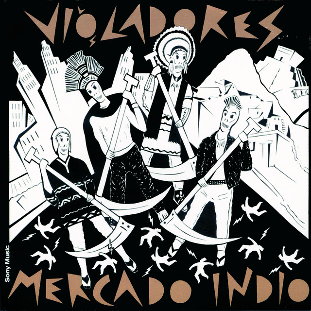
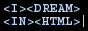

☆ Music reviews ☆
Albums & live concerts reviews, recommendations, or anything music related lol.
Mercado Indio

By Los violadores.
09-18-25 ☆☆☆☆
Mercado indio is an album by the Argentine band called "Los Violadores", which translates to lit. "The Violators" — it can sound pretty harsh in Spanish, but the full name actually is "The Violators of the Law". This album's genre is Punk Rock, and personally I would say that it contains some influences from 80's Post-Punk, specially on the guitar arrangements — this could actually make a lot of sense since it was dropped in the decade of 1980.
I discovered this album because my dad once played the first song called Bombas a Londres. I liked it, and decided to give a listen to the full album. "Bombas a Londres" (Bombs to London) is my favorite track musically and lyrically. I love the guitar riff, the drums and the voice of Pil Trafa here. The lyrics hold a very deep and tragic meaning involving Argentina's history, it portrays the "Guerra de Malvinas" (Malvinas war), which took place in 1982. England invaded Islas Malvinas, which is Argentine territory in the South Atlantic Ocean. It was a depressing event, they sent mostly young teenagers that were in the military service to fight for my country. At that time in Argentina was going through it's last civil-military dictatorship. — It's pretty ironic that I'm writing about this in English, and some can mark me as a traitor; but I want you to take this as example that culture can transpose language. Language is only a tool to communicate a message. I could write in English, but my heart beats in Argentine. My true goal is to share culture, and express myself nationlessly, and present this as a message of peace for us all.
«Sombras siniestras sobre el cielo azul
Ruido de muerte sobre el mar del sur
Nubes oscuras sobre el cielo azul
Ruido de muerte y sobre el mar
Fantasmas y dudas en un lugar del sur
Hay fantasmas, listen to me now
Cartas a Londres o bombas a Londres»
«Sinester shadows over the blue sky
The sound of death over the south sea
Dark clouds over the blue sky
The sound of death and over the sea
Ghosts and doubts, in a place southside
There are ghosts, listen to me now
Letters to London or bombs to London»
Con respeto a quienes dieron la vida y lucharon por nuestro país, Las Malvinas son argentinas, carajo. El tiempo pasa; su valentía y coraje nunca son olvidados. Milicos nunca más.
2nd track is "Aburrido Divertido" (Boring Amusing), that describes an urban panorama surrounded by a constant chaos, and he wonders if he finds the situation rather boring or amusing. Maybe it's a reflex of the indifference of living in a total mess. The chorus got stucked inside my head while writing this. I like the guitar solo, and I find this song quite amusing rather than boring.
3rd track is "Juega a Ganar" (Play to Win), this is my least favorite track, because is too repetitive musically. But the message in the lyrics is kinda nice: it's an encouragement to not stay still, and risk yourself, because you can't win if you don't play. "Y el presente no está si no lo sales a buscar" (And the present is not tLos Violadores - Juega a Ganarhere if you don't search for it)
4th track is "Violadores de la Ley" (Violators of the Law), and this is the one that gives the band its name. Not too much to say about it, it's just a cool punk song about rebeliousness and being a marginal/not sticking in.
5th track is "Infierno Privado" (Private Hell), the same thing about the 4th track applies here. But this song has a more classical rocky/bluesy guitar arrangements at some parts.
6th track is "Mercado Indio" (Indian Market), this one is another historical song, this time referring to the Spanish colonization of Americas — this is some classic history of the world, but if you'd like a refresh: in the 15th century, many countries from Europe, like Spain, Portugal, or England came to the American continent, and submitted the civilizations that were living here. They imposed their own language, religion, and culture on those of the indigenous people's. Sumarized, it's called colonization. The song tell how they colonized us and how we are still being "colonized" by trying to impose on us extranger culture and more. Instrumental part is good.
7th track is "En la Gran Ciudad" (In the Big City), hmm... I'm thinking if I should keep the score of this review at 4/5 or lower it a star, the thing is: this is another criticism about the chaothic reality of living in a big city, just like the 2nd track. This time is more clear they're talking about Buenos Aires.
8th track is "Sólo una agresión" (Just an Aggression), I'm not exactly sure if this one talks about a specific event, but I bet I can say it's just a generalized criticism. It talks about how we humans are animals too, and behave in a violent way by default just like them as well. It says that is natural that we act violently and fight against each other without any reason or personal threat, so is it moral? because you can't cross out a behavior present in nature.
«No temo tus golpes, no me dañan ya
Y hasta me producen cierta felicidad
Me muestras tus dientes, sacas tu puñal
Puede ser moral, también asesinar
Solo una agresión (solo una agresión)
El gato no sabe que tortura al ratón
Están en pie de guerra, les gusta luchar
Sin que en ello haya algo personal
El fantasma ronda, la violencia está
Un espectro habita en tu intimidad»
«I don't fear your blows, they no longer harm me
And they even produce me certain happiness
You show me your teeth, you bring out your dagger
It can be moral, murdering as well
Just an aggression (just an aggression)
The cat doesn't know it tortures the mouse
They're on the warpath, they like to fight
Even without anything personal in it
The ghost prowls, the violence is present
A spectre inhabits in your intimacy»
9th and last track is "Al Borde del Abismo" (In the Edge of Abyss), not too much to say. Sound good, like a watered down and more obscure Sex Pistols. The lyric talk about the man feels a different desire, a desire of murder, product of being damaged. Nothing really remarkbly, just an edgy song.
Nujabes Luv(sic) Hexalogy - Live at Liquidroom
By OMA, Shing02, Uyama Hiroto.
07-04-25 ☆☆☆☆☆
I'll be opening this Music section with an absolute masterpiece to me, and probably one of the most important entries related to this site. I owe the name and most of the inspiration for this to Nujabes and Samurai Champloo. Nujabes has become to be one of my all time favorites artists.
Last year, I've seen that OMA dropped some songs along with Shing02, and it made me really happy to know that he's still singing the songs he made with Mr. Seba, but I didn't know that they were on tour until a couple of months ago when I discovered the live shows on YouTube. It's surprising how these guys can play hip hop songs that were originally made mostly of samples, and how they adapted them to make it sound amazingly good with live instruments.
First two tracks didn't really hit me, they sound good, though I'm personally not to fond of rap in Japanese. Third track felt similar; I couldn't really get into it.
The show really starts at fourth song: Luc(sic) pt 1, and also starting the Luv(sic) Hexalogy, you can see in the crowd how it truly lights up. Drums and keyboards sound exactly like samples extracted straight from a Nujabes record, bass and guitar nailed a good tone that complements great with the rest of the band, and the scratches were done flawlessly. Gotta love the transition from Luv(sic) pt 1 to pt 2 tho.
Luv(sic) pt 2 sounds incredible here, almost ethereal-like. Shing knows how to move the audience, and he's so energetic despite his age. In the middle of the song, Shing introduces Uyama Hiroto, who steps in with a wind instrument — I'm not sure if it is a flute or a sax, I'm no expert — just in time for a breathtaking solo. It sounds beautiful. It's breathtaking to see Shing and Hiroto together after so many years, two legends on stage.
Luv(sic) pt 3 was perfect too. I loved the guitar solo, and the piano solo Hiroto-san did. Luv(sic) pt 4 sounded magical, I gotta highlight how good the bassline is here, it got stuck inside my head for a while.
Luv(sic) pt 5 included a bass solo, but the bass was kinda back at the mix, they increased it later. Part 6 as great, it was Uyama's remix version, and he showed off with the flute. And with that ends the Hexalogy.
Shing tells that he had been living in Hawaii, and wrote this next song 'Southside' about the scenery there. I liked it, the chorus is catchy. After that, Shing presents the next song: 'One Day' by Uyama Hiroto. They feature Troy Everett, who has an angelic voice, absolutely beautiful. Troy's mic was kinda low in volume, they should have turned it up, you can't miss a voice like that, man. He's an amazing violinist too.
Just before the last song, Shing decides to give a speech, he said beautiful words, so I'll transcript them:
«Anime brought us together, and Anime features characters who act based on right and wrong, not what benefits them. Those characters, were probably put in place in the story to teach us a lesson, it's probably because the writers wanted those characters just to have a motivation that is pure, instead of "oh, this is going to profit me" or "this is gonna line my pockets", that's not how Anime works! So, I think hip hop behaves the same way, in my book. You know, you just go for what's yours, but also what is right, not just for what makes money.»
— Shingo Annen, Shing02.
The last song is 'Battlecry', the opening from Samurai Champloo. It begins with a guy beatboxing, not really sure why they decided to include beatbox, but well. They also brought some breakdancers, those guys made good moves. In the middle of the song, they did a drum solo, it was amazing. It was a good interpretation.
The mix on the show was clear like glass, only to notice some times some instruments or mics were a bit back, but it was absolutely killer.
OMA are making fair justice to hip hop. It's beautiful how they are keeping Mr. Seba's legacy alive, I should thank them for that.
Rest in beats, Jun seba: "Nujabes".


